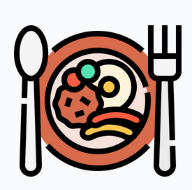
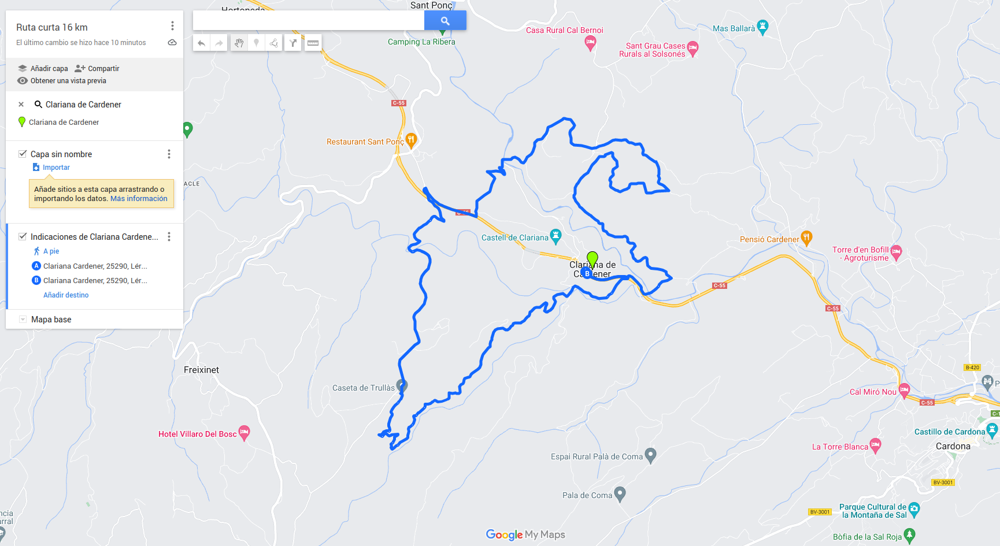

Detalls i itineraris de la ruta
El proper 24 i 25 de juny a les 9 del matí, ornanitzem una emocionant marxa senderista pels paratges del poble de Clariana de Cardener. La marxa tindrà una durada aproximada de 6 hores, recorrerem uns itineraris de 16 km i 25 km de pura naturalesa.
No importa si ets principiant o un senderista experimentat, tots són benvinguts! A més, hi haurà diversos punts de descans i parades per a prendre fotografies i gaudir de les vistes panoràmiques.
Detalls de la marxa 16 km
- Data: 24 de juny
- Hora d'inici: 9:00 am
- Punt de trobada: Plaça de la Casa de la Vila
- Duración: 4 hores
- Distancia: 16 km
- Preu de la incripció 12 euros, en aquest preu s'inclu el dinar de germanor
- El dinar tindra lloc a la mateixa Plaça de la Vila a les 14.30 de la tarda
- Per veure el menú del dinar i ems plats premeu al seguent enllaç

Ruta curta 16 km
Obrir ruta en Google Maps
Detalls de la marxa 25 km
- Data: 25 de juny
- Hora de inicio:9:00 am
- Punto de trobada:Plaça de la Casa de la Vila
- Duración: 6 hores
- Distancia:25 km